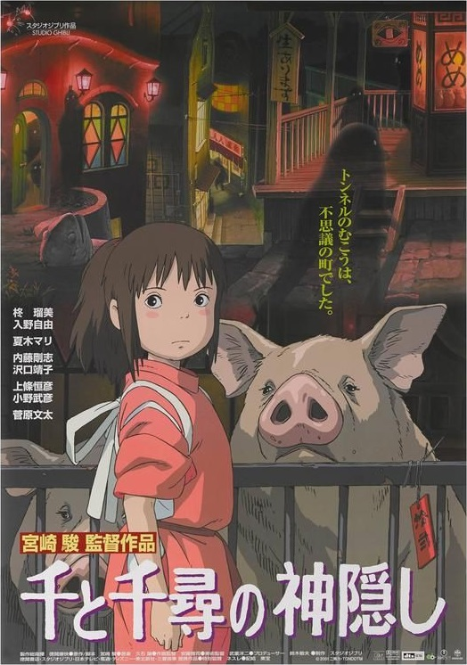

Luís Peres
Undergraduate Student, 10310641
Undergraduate B. Sc. Student in Electrical Engineering at USP, São Carlos Campus.
My Favorite movies
|  |
Spirited Away10-year-old Chihiro and her parents stumble upon a seemingly abandoned amusement park. After her mother and father are turned into giant pigs, Chihiro meets the mysterious Haku, who explains that the park is a resort for supernatural beings who need a break from their time spent in the earthly realm, and that she must work there to free herself and her parents. |

|
Life is BeautifulIn 1930s Italy, a carefree Jewish book keeper named Guido starts a fairy tale life by courting and marrying a lovely woman from a nearby city. Guido and his wife have a son and live happily together until the occupation of Italy by German forces. In an attempt to hold his family together and help his son survive the horrors of a Jewish Concentration Camp, Guido imagines that the Holocaust is a game and that the grand prize for winning is a tank. |

|
Big FishThis picture follows the incredible life of Edward Bloom, through a series of flashbacks that begin when his son Will visits him for the last time. Edward is dying of cancer, and Will hasn't spoken to him for years because he believes him to be a liar that never really cared for his family. As Edward's story unfolds once again, Will tries to finally understand the truth about who his father really was... |

|
Inglorious BasterdsIn German-occupied France, young Jewish refugee Shosanna Dreyfus witnesses the slaughter of her family by Colonel Hans Landa. Narrowly escaping with her life, she plots her revenge several years later when German war hero Fredrick Zoller takes a rapid interest in her and arranges an illustrious movie premiere at the theater she now runs. With the promise of every major Nazi officer in attendance, the event catches the attention of the "Basterds", a group of Jewish-American guerrilla soldiers led by the ruthless Lt. Aldo Raine. As the relentless executioners advance and the conspiring young girl's plans are set in motion, their paths will cross for a fateful evening that will shake the very annals of history. |
Others Interests
Talking a little more about me:-
Pixel Art
-
Lo-Fi Hip-Hop
-
Skateboarding